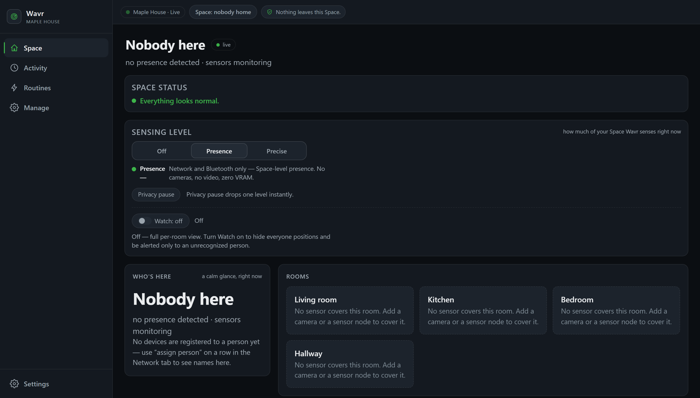

One computer keeps the Core alive for your Space. Your phone, a
tablet, or another laptop can then just connect to it, no separate install needed
on those.
Checking the current release…
Checking your browser for a platform hint…
Recommended for you
All downloads
Wavr for Windows
Recommended
Start here. This computer keeps Wavr running for your Space and
lets your phone and other devices connect to it. It installs like any other
Windows program — there is nothing to set up first.
Before you run it: this is an early, unsigned build. Windows
will show a blue "Windows protected your PC" screen naming an unrecognized
publisher. That's expected: click More info, then
Run anyway.
See and use your Space from your phone or tablet. Install the
app, then point it at the computer running Wavr.
No Android build has been published
here yet. In the meantime, pair a browser to a Core instead: see
the Android steps on Install.
On the computer running Wavr, open Settings and turn on
"Let other devices connect."
Open the app and scan the QR code the computer shows. It carries the
address and a fingerprint of that computer, so nothing has to be typed.
What you'll see: Android will ask to allow the install (it
isn't from the Play Store) and, once open, the app will ask to trust the
connection. Both are expected for a local-only app.
This APK is debug-signed. The site says elsewhere that the
Windows installer is unsigned; the same is true here, in the Android form of it.
It carries the default development signature rather than a release one, which is
fine for installing on your own device and means it could never go to the Play
Store as it stands.
The phone app is behind the desktop in this release. Its
dashboard was built from an earlier version of the same code, so some screens
look and read differently from the computer's. It connects, pairs and shows
your Space correctly — it is the wording and layout that lag, not the
answers. Catching the two up is work in progress, and shipping a phone build
nobody had tested would have been the worse trade.
Most download pages stop at the button. Here is the rest of
it, so nothing that happens next is a surprise.
Wavr opens by itself. If it doesn't, it is in the Start menu
under Wavr. The window may say it is starting for a few seconds before the real
thing appears.
It asks what this place is — a home, a flat, an office,
a shop. It will not assume, and it will not invent rooms you don't have.
You give it a name and one room, whichever room this computer
is in. Accents and apostrophes are fine.
You land on the dashboard. That's the install done. Nothing
else is required, and nothing has left your network.
The one moment worth knowing about in advance
Later, when you turn on “Let other devices connect”
so your phone can reach it, Windows will put up a second window — a firewall
prompt with two checkboxes, private networks and public networks.
Tick both, then click Allow access. Windows labels each Wi-Fi as
private or public, and plenty of ordinary home networks are labelled public. If
you tick only “private”, Windows accepts it, the window closes, and
everything looks like it worked — but the permission does not apply to the
network you are actually on, and your phone will never find the computer. There is
nothing on screen at that point to tell you why.
Ticking both does not open Wavr to the internet. It is still only this one
program, and still only devices already on your own Wi-Fi.
Wavr keeps running when you close its window — look for
its icon near the clock. To stop it completely, use Quit from that icon. To remove
it, uninstall it from Windows Settings like any other program.
What day one actually looks like
Screenshots on this site show a Space that has sensors in
it. A fresh install does not, and it would be unfair to let you find that out
after installing. Here is the honest order of things — starting with a
picture of it.

Ten minutes after installing, before you add
anything. Every room says the same thing, and that sentence is the product being
straight with you rather than a fault to fix.
What this installer can actually sense
Two things, and they are the two that need no hardware you don't already own:
your own Wi-Fi — which devices are on it, which it
recognises, which it has never seen before, and therefore whether anyone is home
at all — and Bluetooth, once you have told it which device
belongs to whom. Both work the moment it starts.
That answer is about the Space as a whole, not about a room. Your rooms will each
say “No sensor covers this room”, because at that point none
of them do. That sentence is Wavr being straight with you, not a fault.
What is not inside this installer
Camera person-detection and USB radar are not in it. The
detection model would take the download from about 40 MB to over a gigabyte,
so it is deliberately left out: the code is all there, but reaching it means
installing Wavr from source into your own Python. If you were hoping to point a
webcam at a room today, this build will not do that, and it is better that you
hear it here than after installing.
Everything the site says about cameras — that no image is ever written to
disk, that there is no video storage of any kind, that they start switched off
— stays true of the code. It just isn't reachable from this file.
What Wavr keeps.
A small sensor board over Wi-Fi
A radar or motion board would give a room its own presence with no camera in it
— the right answer for a bedroom — and it joins over Wi-Fi with a
one-time code. The Wavr side of that is built and tested. The board's own firmware
is written and has never been run on real hardware, by anyone. You
would be the first; this is what is involved.
Your phone
The Wavr app shows you your Space from anywhere on the same Wi-Fi. In this release it
does not sense anything itself — it is a window onto the Core running on
your computer, not another sensor.
Take this page to your phone
Scan this with your phone's camera to open this exact page
there, so you can pick up the steps above from your phone directly.
This page is open at an address only this computer
can reach (localhost, or a local file), so a QR code here
wouldn't actually open for your phone. Open this page using the computer's
network address instead (ask whoever set up Wavr, or check what address you
used to reach it), and the code above will work.
Advanced downloads
Wavr Core for Android Experimental
Turns one phone into the Wavr brain instead of a Windows PC: the same Core,
not a reduced copy. Do not install this today. This build
has no first-run setup screen yet, and nobody has run it on a physical phone
long enough to know its battery behavior or how it survives a reboot.
Not published here. It's source-only
today; see Compatibility
for the full status.
Wall-panel / kiosk mode (replaces your home screen)
This is not a normal app. It registers itself as that
device's home screen (its default launcher), replacing whatever you use
today. Do not install it on your own phone or tablet — only
on a device you're happy to dedicate to Wavr as a wall panel. To go back,
change the default launcher again in Android's own Settings.
An always-on ambient panel view, meant for a tablet mounted on a wall
rather than a phone you carry around.
Not published here. The launcher
exists in the repository as a Gradle project; see
Compatibility for
its current status.
Not Windows or Android?
macOS, Linux, Raspberry Pi, Docker, and building from source
are all covered on the full install page, including exactly what's field-tested
and what isn't yet.